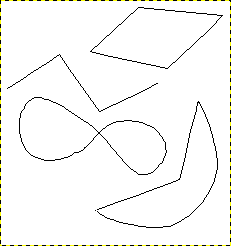
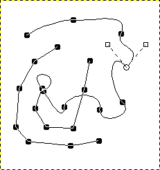

|

|
 |
| 3.3. Using Quick Mask Mode |

|
4.2. Path Properties |
Paths are curves (known as Bézier-curves). To understand their concepts and mechanism, look at the glossary Bézier-curve or Wikipedia [WKPD-BEZIER]. The Paths tool allows you to design complex shapes. When designing a shape, you first use the Paths tool in GIMP to create a path. After that you usually stroke or fill the path.
In GIMP, the term “Stroke path” means to apply a specific style to the path (color, width, pattern, etc).
A path can be used in several ways:
You can convert a closed path to a selection.
Any path, open or closed, can be stroked; that is, painted on the image in a variety of ways.
A path can be filled with a color or pattern. If the path is not closed, it will try to figure out the shape and then fill it. However, this will not work if the path is a straight line.
Figure 7.10. Illustration of four different paths

Four examples of GIMP paths: one closed and polygonal; one open and polygonal; one closed and curved; one with a mixture of straight and curved segments.
Start by drawing the outline for your path; the outline can be modified later (see the Paths tool). To start, select the Paths tool using one of the following methods:
Use → from the menu.
Use the relevant icon in toolbox.
Use the B keyboard shortcut.
When the Paths tool is selected, the mouse cursor changes into a crosshair with a curve by default. The actual shape depends on your mouse pointer mode setting. Make sure that the Paths Edit Mode in Tool Options is set to Design.
Left click in the image to create the first point of the path. Move the mouse to a new point and left click to create another point linked to the previous point. Although you can create as many points as you desire, you only need two points to learn about Paths.
While adding points, the mouse cursor has a little “+” next to the curve, which indicates that clicking will add a new point.
When the mouse cursor is close to one of the path points, the “+” changes into a cross with arrows; like the move tool. You can then move the existing path point.
To close your path, go with the mouse on top of the point you want to connect to, and then click that point. When you are done designing your path, you can press Enter. This will turn the path into a Selection. You can also keep adding more points, or start changing the curves of the path.
To edit the curves of your path, move the mouse cursor close to a line segment, left-click and drag the line segment. Two events occur.
The line segment bends and curves as it is pulled.
Each line segment has two start points and end points marked by little square rectangles, these are called handles. A “direction line” now projects from each start point for the line segment that was moved. This direction line usually has a different color than the lines of the path.
The curved line segment leaves an end point in the same direction that the “direction line” leaves the start point. The length of this line controls how far the line segment projects along the “direction line” before curving towards the other path point.
The handle at the end of each “direction line” can be dragged to change the direction and length of the curve. The handles on the other end, where they connect to the path, can be used to move the position of that path point.
Figure 7.11. Appearance of a path while it is manipulated

Appearance of a path while it is manipulated using the Paths tool.
The path is comprised of two components with both straight and curved segments. Black squares are anchor points, the open circle indicates the selected anchor, and the two open squares are the handles associated with the selected anchor.